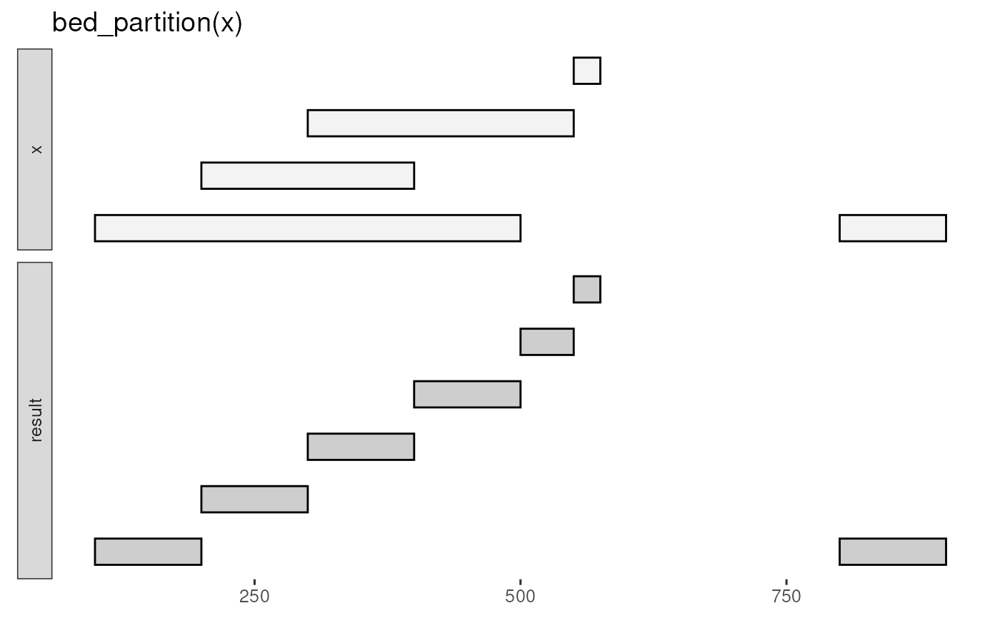
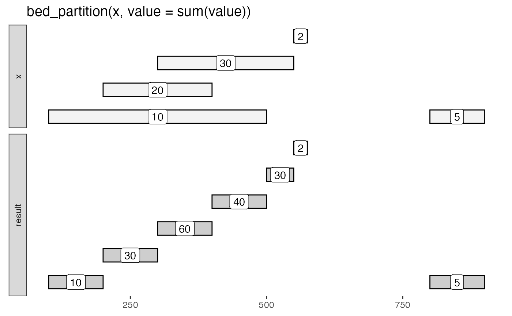

Convert a set of intervals into elemental intervals that contain each start and end position in the set.
bed_partition(x, ...)
| x | |
|---|---|
| ... | name-value pairs specifying column names and expressions to apply |
Summary operations, such as min() or count() can be performed
on elemental intervals by specifying name-value pairs.
This function is useful for calculating summaries across overlapping intervals without merging the intervals.
input tbls are grouped by chrom by default, and additional
groups can be added using dplyr::group_by(). For example,
grouping by strand will constrain analyses to the same strand. To
compare opposing strands across two tbls, strands on the y tbl can
first be inverted using flip_strands().
Other single set operations:
bed_cluster(),
bed_complement(),
bed_flank(),
bed_merge(),
bed_shift(),
bed_slop()
x <- tibble::tribble( ~chrom, ~start, ~end, ~value, ~strand, 'chr1', 100, 500, 10, "+", 'chr1', 200, 400, 20, "-", 'chr1', 300, 550, 30, "+", 'chr1', 550, 575, 2, "+", 'chr1', 800, 900, 5, "+" ) bed_glyph(bed_partition(x))bed_partition(x)#> # A tibble: 7 x 3 #> chrom start end #> <chr> <int> <int> #> 1 chr1 100 200 #> 2 chr1 200 300 #> 3 chr1 300 400 #> 4 chr1 400 500 #> 5 chr1 500 550 #> 6 chr1 550 575 #> 7 chr1 800 900#> # A tibble: 7 x 4 #> chrom start end value #> <chr> <int> <int> <dbl> #> 1 chr1 100 200 10 #> 2 chr1 200 300 30 #> 3 chr1 300 400 60 #> 4 chr1 400 500 40 #> 5 chr1 500 550 30 #> 6 chr1 550 575 2 #> 7 chr1 800 900 5# partition and compute summaries based on group x <- dplyr::group_by(x, strand) bed_partition(x, value = sum(value))#> # A tibble: 6 x 5 #> chrom start end strand value #> <chr> <int> <int> <chr> <dbl> #> 1 chr1 100 300 + 10 #> 2 chr1 200 400 - 20 #> 3 chr1 300 500 + 40 #> 4 chr1 500 550 + 30 #> 5 chr1 550 575 + 2 #> 6 chr1 800 900 + 5# combine values across multiple tibbles y <- tibble::tribble( ~chrom, ~start, ~end, ~value, ~strand, 'chr1', 10, 500, 100, "+", 'chr1', 250, 420, 200, "-", 'chr1', 350, 550, 300, "+", 'chr1', 550, 555, 20, "+", 'chr1', 800, 900, 50, "+" ) x <- dplyr::bind_rows(x, y) bed_partition(x, value = sum(value))#> # A tibble: 11 x 5 #> chrom start end strand value #> <chr> <int> <int> <chr> <dbl> #> 1 chr1 10 100 + 100 #> 2 chr1 100 300 + 110 #> 3 chr1 200 250 - 20 #> 4 chr1 250 400 - 220 #> 5 chr1 300 350 + 140 #> 6 chr1 350 500 + 440 #> 7 chr1 400 420 - 200 #> 8 chr1 500 550 + 330 #> 9 chr1 550 555 + 22 #> 10 chr1 555 575 + 2 #> 11 chr1 800 900 + 55